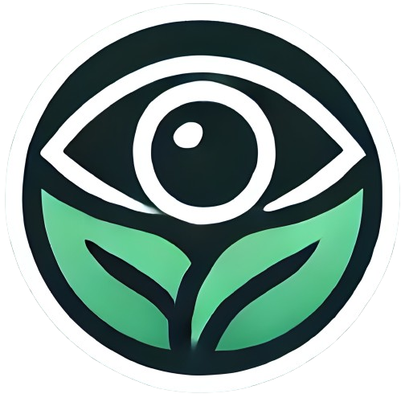

EyesEverywhere


Ajude-nos a localizar os problemas.
A EyesEverywhere é uma plataforma dedicada à preservação ambiental, focada na monitorização e gestão de ocorrências em espaços naturais e urbanos. A nossa missão é proteger e preservar o meio ambiente através da auditoria, registo e resolução de problemas ambientais, promovendo um futuro sustentável para todos. Acreditamos que pequenas ações fazem a diferença e, com a tua ajuda, podemos garantir a conservação dos nossos ecossistemas.
Auditorias
Avaliamos e protegemos espaços naturais através de auditorias ambientais. Vê auditorias antigas aqui..Ocorrências
Consulta problemas ambientais reportados e o seu estado de resolução. Vê ocorrências antigas aqui.Submeter Ocorrência
Denuncia problemas ambientais e ajuda a preservar a natureza. Submete a tua ocorrência aqui.Contactos
Fala connosco para esclarecer dúvidas ou contribuir para a preservação do meio ambiente. Estamos aqui para ajudar!.Árvores em Risco de Queda
Gestão de Resíduos em Áreas Naturais
Manutenção de Jardins e Parques

Monitorização da Qualidade do Solo
Preservação de Espaços Verdes


📞 +351 912 345 678
📧 eyeseverywhere@gmail.com
🌐 everywhere